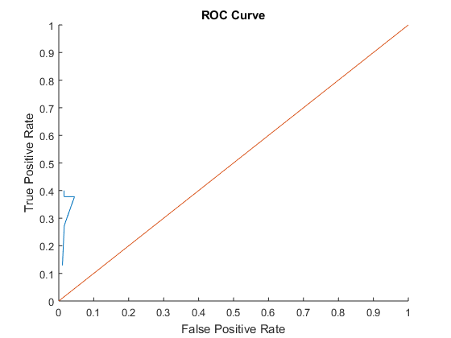

Contents
Import data from spreadsheet
Script for importing data from the following spreadsheet:
Workbook: C:\Users\princ\Desktop\Fall2017\ML\Project\rawinput.xlsx Worksheet: Sheet1
To extend the code for use with different selected data or a different spreadsheet, generate a function instead of a script.
% Auto-generated by MATLAB on 2017/11/24 19:54:27
Import the data
[~, ~, raw] = xlsread('F:\Masters\Fall\Machine Learning\project\Project\Project\rawinput.xlsx','Sheet1'); raw(cellfun(@(x) ~isempty(x) && isnumeric(x) && isnan(x),raw)) = {''}; cellVectors = raw(:,[1,4,5,6,7,9,10,12,13,16]); raw = raw(:,[2,3,8,11,14,15]);
Replace non-numeric cells with NaN
R = cellfun(@(x) ~isnumeric(x) && ~islogical(x),raw); % Find non-numeric cells raw(R) = {NaN}; % Replace non-numeric cells
Create output variable
data = reshape([raw{:}],size(raw));
tic; %Caluculation of elapsed time
datanew=cleancontdata(data,cellVectors);
[cellVector,~,~]=cleancelldata(cellVectors);
strain=length(datanew(1:400,:));
k=100;%no of bins
l=1;
testdata=datanew(401:690,:);
testcell=cellVector(401:690,:);
%computation of probability matrix
[p_datapos,p_dataneg,p_cellpos,p_cellneg,data1_min,data1_increment,count_cell_pos]=computeProbabilitymatrix(cellVector(1:400,:),datanew(1:400,:),k,l);
%perform classification
[P_testpos,P_testneg]=computeNBC(testdata,data1_min,data1_increment,k,testcell,p_datapos,p_dataneg,p_cellpos,p_cellneg,count_cell_pos,strain);
tp=zeros(1,10);
tn=zeros(1,10);
fp=zeros(1,10);
fn=zeros(1,10);
%caluculate accuracy,precision,recall,f-measure
for k=1:10
for i=1:290
if P_testpos(i)>(k*0.01+0.45) && strcmp('+',cellVector(400+i,10))
tp(k)=tp(k)+1;
elseif P_testneg(i)>(k*0.01+0.45) && strcmp('-',cellVector(400+i,10))
tn(k)=tn(k)+1;
elseif P_testpos(i)>(k*0.01+0.45) && strcmp('-',cellVector(400+i,10))
fp(k)=fp(k)+1;
elseif P_testneg(i)>(k*0.01+0.45) && strcmp('+',cellVector(400+i,10))
fn(k)=fn(k)+1;
else
continue;
end
end
Accuracy(k)=(tp(k)+tn(k))/(tp(k)+tn(k)+fp(k)+fn(k));
Precision(k)=tp(k)/(tp(k)+fp(k));
Recall(k)=tp(k)/(tp(k)+fn(k));
fmeasure(k)=(2*Recall(k)*Precision(k))/(Recall(k)+Precision(k));
%Plotting ROC Curve
TPR(k)=(tp(k))/(tp(k)+fn(k));
FPR(k)=(fp(k))/(fp(k)+tn(k));
end
x=[0:1];
y=x;
hold on;
plot(FPR,TPR);
title('ROC Curve');
xlabel('False Positive Rate');
ylabel('True Positive Rate');
xlim([0 1]);
ylim([0 1]);
plot(x,y);
toc; % end of caluculation of elapsed time
Elapsed time is 1.149978 seconds.